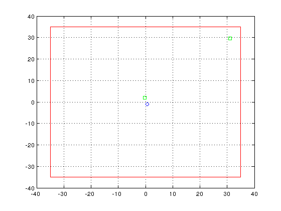

Contents
WiNetSim
Wireless Network Simulator \n
Copyright (C) 2016 IIT Hyderabad \n
This program is free software: you can redistribute it and/or modify
it under the terms of the GNU General Public License as published by
the Free Software Foundation, either version 3 of the License, or any later version.
This program is distributed in the hope that it will be useful, but
WITHOUT ANY WARRANTY; without even the implied warranty of
MERCHANTABILITY or FITNESS FOR A PARTICULAR PURPOSE. See the GNU
General Public License for more details.
You should have received a copy of the GNU General Public License
along with this program. If not, see <http://www.gnu.org/licenses/>.
Contact Information
WiNetSim Admin : sreekanth@iith.ac.in
Address : comm-lab, IIT Hyderabad
params_wifi
global system_time kk;
system_time=0;
layout_wifi;
obj_init_wifi;
run_time =10;

start simulation
kk=0;kk1 =0;
while (system_time<run_time)
kk=0;
while (kk<100)
do a check-buffer
jump=[];
for i=1:NCell
for j=1:n_AP
jump1 = AP_obj{1,i}(j).check_buffer();
jump = [jump jump1];
for k=1:n_STA
jump3 = STA_obj{i,j}(k).check_buffer();
jump = [jump jump3];
end
end
end
jum = min(jump);
Undefined function 'PL_measure' for input arguments of type 'double'.
Error in STA_11ac/check_buffer (line 191)
PL=sum(obj.Pt_AP.*10.^(PL_measure(obj.ACTIVE_Devices,obj.fc,obj.channel_type)/10));
Error in scenario_ncell_nap_nsta (line 46)
jump3 = STA_obj{i,j}(k).check_buffer();
do a dec_counter
for i=1:NCell
for j=1:n_AP
AP_obj{1,i}(j).dec_counter();
for k=1:n_STA
STA_obj{i,j}(k).dec_counter();
end
end
end
do a dec_time
for i=1:NCell
for j=1:n_AP
AP_obj{1,i}(j).dec_time();
for k=1:n_STA
STA_obj{i,j}(k).dec_time();
end
end
end
update time
if(jum<0)
jum=0;
end
system_time = system_time+1+jum;
if(mod(system_time,10000)==0)
fprintf('\b\b\b\b\b\b\b\b\b\b\b\b\b\b\b\b\b\b\b\b system time %3.3f s',system_time*1e-6);
end
do time jump
if(jum>0)
for i=1:NCell
for j=1:n_AP
AP_obj{1,i}(j).jump_t(jum);
for k=1:n_STA
STA_obj{i,j}(k).jump_t(jum);
end
end
end
end
end
kk1 = kk1+kk;
save Inter_wifi_dcf_10_1
results_script_wifi
end